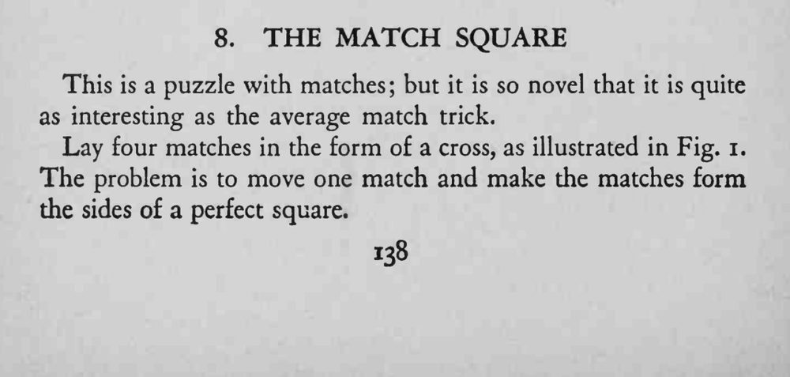
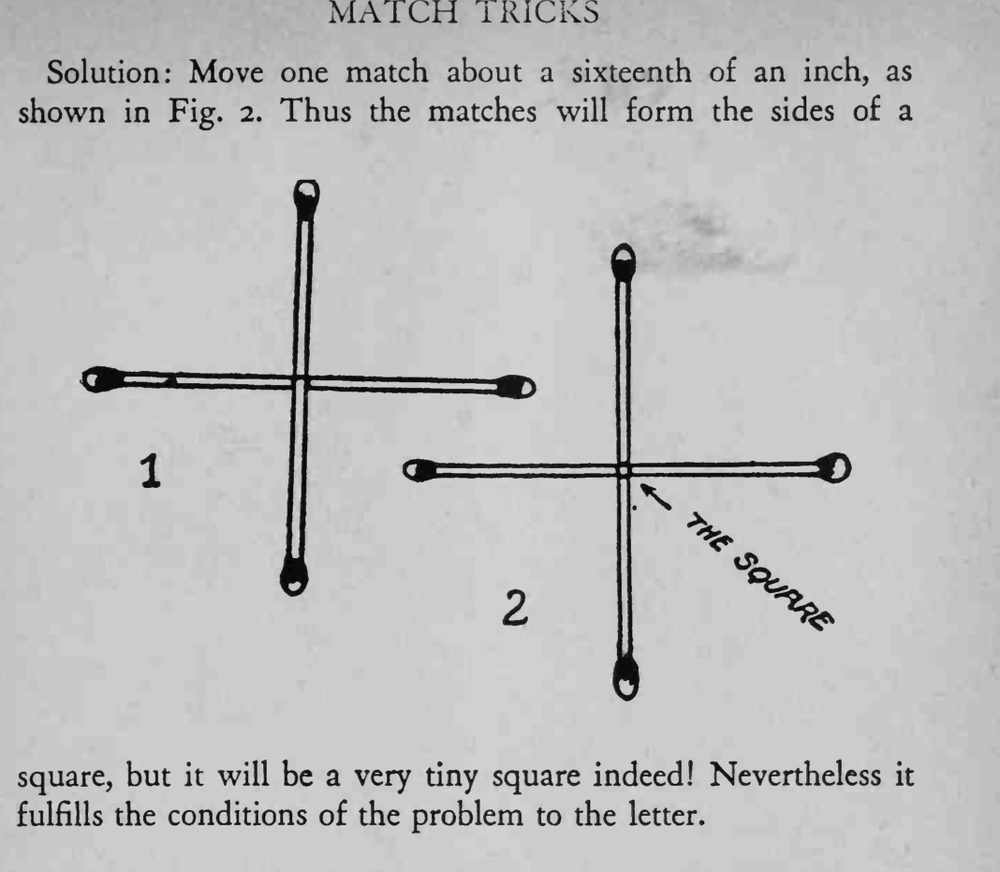

四根火柴摆成一个十字，只移动其中一根，就让它们围成一个正方形。
答案是一个极小的正方形，移动的距离要非常微细。


This is a puzzle with matches but it is so novel that it is quite as interesting as the average match trick. Lay four matches in the form of a cross, as illustrated in Fig. i. The problem is to move one match and make the matches form the sides of a perfect square. Solution: Move one match about a sixteenth of an inch, as shown in Fig. 2. Thus the matches will form the sides of a square, but it will be a very tiny square indeed! Nevertheless it fulfills the conditions of the problem to the letter.